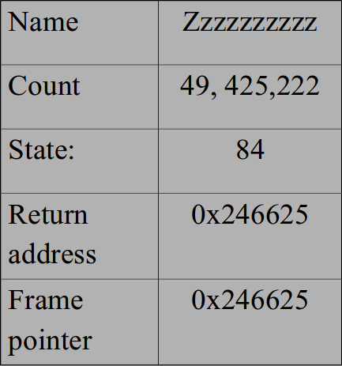
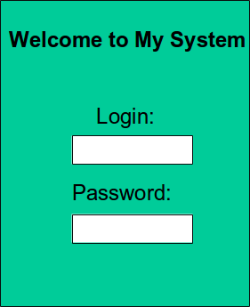
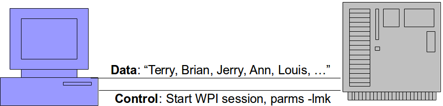
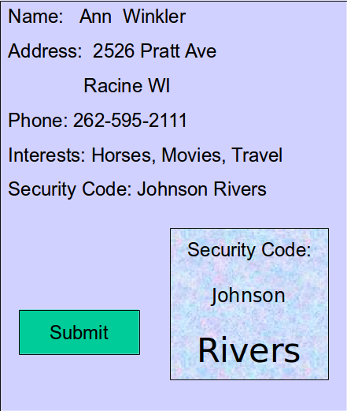

Problem: Cleartext Transmit/Storage of Sensitive Info
Fix:
- Encrypt data with standard, reliable encryption before transmission
- Whole-drive/File Encryption
Problem: Adopting Untrusted Software
Fix:
- Use monitoring tools that examine processes as it interacts with the OS
- Truss (Solaris)
- Strace (Linux)
- FileMon, RegMon, Process Monitor, Sysinternals (Windows)
- Sniffers, Protocol analyzers

Free Software ... Is it Safe?
Problem: Buffer Overflow

Enter Name: Zzzzzzzzzzzzzzzzzzzzzzzzzzzzzzzzzzzzzzzzzzzzzzzzzzzzzzzzzzzzzzz
Problem: Race Condition
Threads both using same variables.
Fix:
- Use Synchronization Primitives around critical code
- Measure use of shared resources
- Test using artificial delays in race window
- Identify and trigger error conditions
Problem: OS Command Injection
Problem: Command Injection into SQL
Inserts |shell("cmd /c echo " & char(124) & "format c:")|
- Data and control can traverse same path

Fix: Avoid OS Command Injection
- Separate control information from data information.
- E.G. where data -> database, control defines application
- Use library calls instead of external processes
- Avoid external control of command input
- Run code in "jail" or other sandbox environment
- Provide lowest possible permissions for executable

Problem: External Control of Critical State Data
User - side data can be modified
- Cookies
- Configuration files
- Profiles
- Hidden form fields
- Environmental variables
- Registry keys

Fix: Control Critical State Data
- Understand all locations that are accessible to attackers
- Do not keep state info on client without using encryption and integrity checking (e.g. HMAC)
- Store state info on server side only: ASP.NET View State, OWASP ESAPI Session Mgmt
Problem: Insecure Interaction Between Components

Problem: Insecure Interaction Between Components
- Web servers are memoryless
- Do not remember sending a form to a client - what type, info
- Client side can remove checks, insert other code, return unexpected data, etc.

Fix: Prevent Forgery
- Use a nonce for each form
- Not predictable
- If dangerous operation, send a separate confirmation request

Problem: Improper Access Control

Fix: Access Permissions
- Use Role-Based Access
- At least permissions: anonymous, normal, privileged, administrative
- Verify access control at server side
- Sensitive pages are never cached and must have active authorization token
- Only provide higher level access when you need it; always run with the minimum possible authorization level
- Check that files read have the required access level permissions; administrators may not set them properly.
- Use a good random number generator when generating random session keys – if not random, attackers will figure out next key sequence
Problem: External Control of Path
- If you download an external file or navigate to a URL - and execute
- If you provide access to a file on your system
- Attacker can insert
../../ and access files outside privilege.
Fix:
- Run as low-privilege user
- Provide fixed input values
- Run code in 'jail': Unix chroot jail and AppArmor